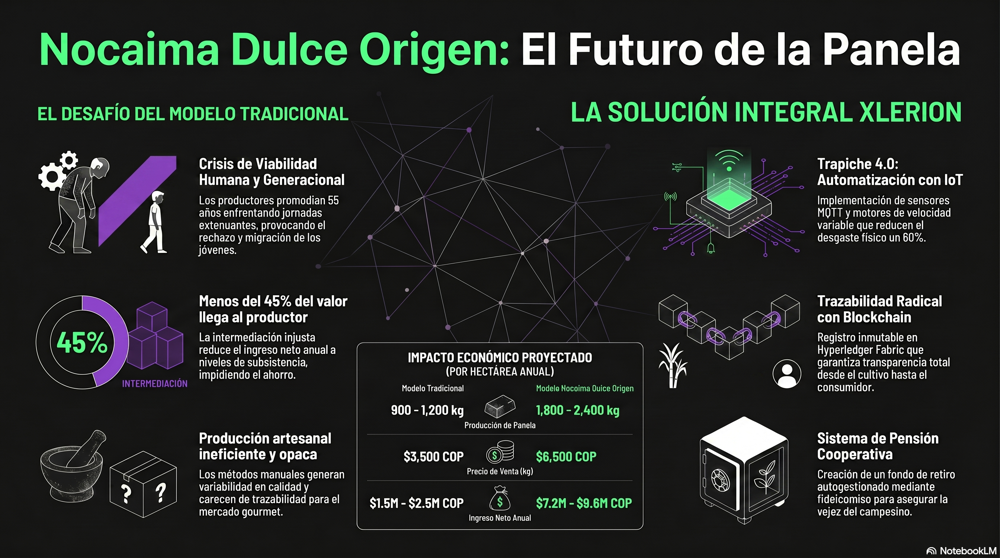
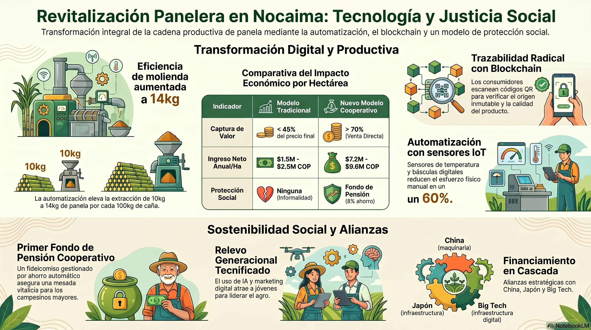
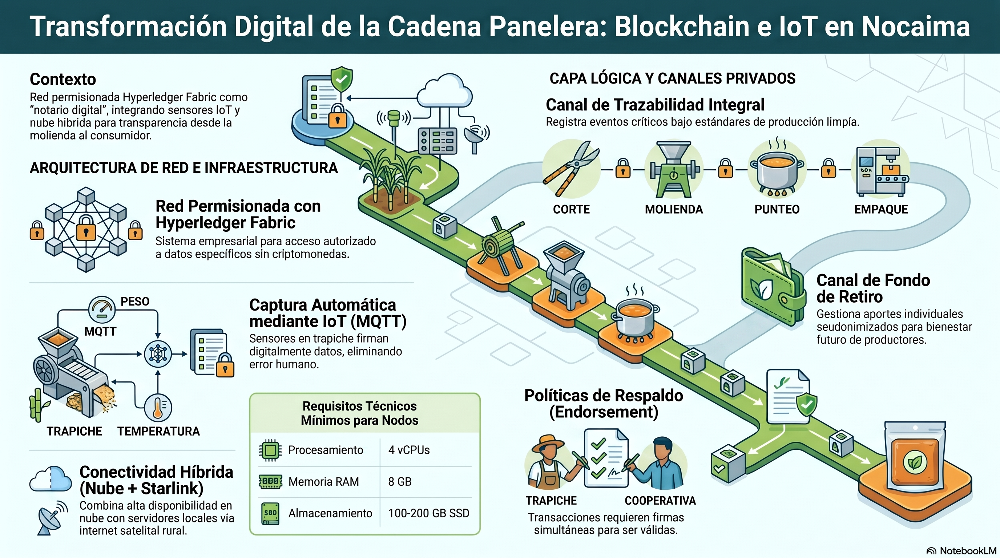

Tasa de Interés de Política Monetaria: 12,25% (octubre 2026, Banco de la República). Esto encarece el crédito agropecuario y obliga a priorizar recursos no reembolsables.
Inflación proyectada: 5,0% anual cierre 2026.
Crecimiento PIB: 2,6% para 2026, desaceleración que limita la expansión del mercado gourmet.
1.2. Realidad del Mercado Panelero
Precio al productor (octubre 2026): Entre $3.300 y $4.200 COP/kg, con denuncias de pérdidas dado que el costo de producción ronda los $4.200.
Precio mayorista Bogotá: $4.436 COP/kg (panela cuadrada, octubre 2026).
Precio consumidor final Bogotá: $7.000 - $9.000 COP/kg.
📊 Cadena de precios por kg (COP, escala 0 – 9.000)
Productor tradicional
$3.300 – $4.200
Costo de producción
$4.200
Mayorista Bogotá
$4.436
Cooperativa ($5.800)
$5.800 ✓
Consumidor final
$7.000 – $9.000
El productor tradicional vende por debajo de su costo ($4.200). La cooperativa ($5.800) solo es viable con venta directa y marca propia.
⚠️ DIAGNÓSTICO CRÍTICO: El supuesto original de pagar $6.500/kg al productor es irreal en mercado mayorista tradicional; solo es viable mediante venta directa al consumidor final con marca propia y valor agregado.
1.3. Marco Normativo Crítico Vigente
Ámbito
Norma
Impacto en el Proyecto
Reforma Pensional
Ley 2381 de 2024 - SUSPENDIDA por Corte Constitucional (Sentencia C-264 de junio 2025)
Imposible estructurar el fondo bajo el nuevo Sistema de Protección Social Integral. Debe usarse el marco actual (Colpensiones + BEPS + Colombia Mayor).
Colombia Mayor 2026
Prosperidad Social
$225.000-$230.000/mes. Edad: 65 años hombres, 60 años mujeres. Complemento real, no sustituto de pensión.
BEPS
Colpensiones
Anualidad vitalicia desde los 57 años (mujeres) y 62 (hombres). Vehículo natural para el ahorro campesino.
Cooperativas
Ley 79/1988, Ley 454/1998, Circular 94 de 2025 (Supersolidaria)
Exige nuevo Código de Buen Gobierno obligatorio desde marzo 2026.
Régimen Tributario
Art. 19-4 Estatuto Tributario (Ley 1819/2016)
Cooperativas tributan al 20% sobre excedentes, no sobre ingresos. Requisito: mantenerse en RTE ante DIAN.
INVIMA
Resolución 4217 de 2013 y modificaciones
Panela natural NO requiere notificación sanitaria. Panela saborizada SÍ la requiere.
ICR 2026
Circular 27 de 2026 FINAGRO
Hasta 40% de abono al crédito para pequeños productores de ingresos bajos.
Código CIIU
1072 - Elaboración de panela
Clasificación obligatoria para RUT y facturación electrónica.
2. REESTRUCTURACIÓN DE LOS 5 PILARES

Visión general: del modelo tradicional intermediado al modelo cooperativo tecnificado. Nota: las cifras de esta infografía corresponden a una versión previa del proyecto; rigen los valores de las tablas del presente documento ($5.800/kg al productor; protección vía BEPS + Fondo de Solidaridad + Colombia Mayor).
2.1. PILAR 1: AUTOMATIZACIÓN DEL TRAPICHE
Problema original: Cotizaciones genéricas sin considerar aranceles, fletes internacionales y soporte técnico en Colombia. Solución 2026: Proveedores priorizados con soporte local y financiación en cascada.
Aporte Cooperativa: 10% = $21.550.000 (especies + mano de obra).
2.2. PILAR 2: COMERCIALIZACIÓN DIRECTA
Precio realista al productor asociado: $5.800 COP/kg (no $6.500, ajustado al mercado 2026).
Líneas de Producto (marca "Nocaima Dulce Origen")
Línea
Presentación
Precio Público
Margen Bruto Cooperativa
Tradicional
Bloque 500g eco-empaque
$4.500
28%
Gourmet
Panela granulada 300g
$12.000
45%
Saborizada
Caja 4 unidades 125g
$14.500
52% (requiere registro INVIMA)
Miel Virgen
Frasco 350ml
$13.500
48%
Suscripción Mensual
Box mixto
$35.000
42%
Margen promedio ponderado: 38% sobre costo de producción. Ingresos netos por hectárea proyectados: De $2.500.000 a $5.800.000 COP/año (duplicar x2.3, no triplicar).
⚠️ Modelo tradicional
$2.5 M ingreso neto / ha / año
<45% del valor final para el productor
0 protección social (informalidad)
✓ Modelo cooperativo
$5.8 M ingreso neto / ha / año
60% venta directa al año 2
3 capas de protección (BEPS + Fondo + Colombia Mayor)
📊 Margen bruto por línea de producto
Tradicional
28%
Gourmet
45%
Saborizada
52%
Miel Virgen
48%
Suscripción
42%
Promedio ponderado: 38%. La línea saborizada exige registro INVIMA.

Comparativa del impacto económico y los pilares sociales del proyecto. Nota: infografía de una versión previa; rigen los valores del presente documento ($5.800/kg; aporte BEPS 4% + Fondo 2%; blockchain solo en Fase 2).
2.3. PILAR 3: TRAZABILIDAD DIGITAL
Problema original: Implementar blockchain desde el mes 1 es prohibitivamente costoso (>$80 millones en desarrollo y gas fees).
Solución Full-Stack (Expertise técnico Xlerion)
Fase 1 (Meses 1-12): Sistema centralizado de bajo costo
Base de datos: 5 tablas relacionadas (Productor, Suerte, Lote, Calidad, Proceso).
Costo total año 1: $6.500.000 (desarrollo + hosting + mantenimiento).
Fase 2 (Año 2+): Migración a Polygon PoS
Contratos inteligentes en Solidity para certificación de origen.
Cumplimiento del Reglamento UE 2023/1115 (Deforestación).
Costo migración: $35.000.000 (financiable con cooperación internacional).

Arquitectura de trazabilidad: captura IoT (MQTT) desde el corte hasta el empaque. Nota: el registro en blockchain corresponde a la Fase 2; en Fase 1 opera el sistema centralizado ($6.5 M).
2.4. PILAR 4: PROTECCIÓN SOCIAL RURAL
⚠️ CRÍTICO: El fideicomiso tal como se planteó en el documento original NO ES VIABLE JURÍDICAMENTE EN 2026 por las siguientes razones:
La Ley 2381 de 2024 (reforma pensional) fue suspendida por la Corte Constitucional.
Los fondos de pensiones voluntarios están regulados estrictamente por la Superfinanciera y exigen patrimonio mínimo de $15.000 millones.
Una fiduciaria cobra entre 1.5% y 2.5% anual sobre AUM, lo cual erosiona los ahorros campesinos pequeños.
El descuento automático del 5-8% sobre ventas puede interpretarse como aportes obligatorios a un fondo no autorizado.
NUEVA ESTRUCTURA: Modelo "Triple Protección Rural"
✓ ESTO SÍ ES VIABLE y está 100% dentro del marco legal colombiano.
2.5. PILAR 5: MARKETING ÉTICO-LEGAL
Problema original: Mensajes como "Endulzante natural" pueden violar la Resolución 2492 de 2022 (etiquetado frontal) y la Ley 2120 de 2021 (entornos escolares saludables).
Mensajes ajustados 2026 (cumpliendo INVIMA y SIC)
✓ PERMITIDO "Panela 100% colombiana, elaborada sin blanqueadores químicos. Proceso automatizado que garantiza inocuidad."
✓ PERMITIDO "Contiene minerales naturales de la caña como potasio y magnesio." (con tabla nutricional avalada por laboratorio acreditado ONAC).
✗ PROHIBIDO "Endulzante saludable" o "Superalimento" (la OMS clasifica la panela como azúcar libre).
✓ DIFERENCIADOR CLAVE "Primer trapiche de Cundinamarca con trazabilidad QR verificable. Conoce al productor detrás de cada bloque."
3. ESTRUCTURA JURÍDICA PROPUESTA
3.1. Tipo de Entidad
Cooperativa Multiactiva de Productores Paneleros de Nocaima (NO cooperativa de ahorro y crédito, para evitar regulación financiera estricta).
3.2. Objeto Social (Artículo 5, Ley 79/1988)
Transformación, comercialización y distribución de panela y derivados de la caña.
Adquisición colectiva de insumos y maquinaria.
Prestación de servicios de asistencia técnica.
Creación y administración de fondos de solidaridad y previsión (Art. 56).
Desarrollo de actividades de agroturismo.
3.3. Cumplimiento Circular 94 de 2025 (Supersolidaria)
Adopción del Código de Buen Gobierno Cooperativo obligatorio desde 2026.
Conformación de Comité de Riesgos y Comité de Vigilancia con miembros independientes.
Publicación trimestral de estados financieros en lenguaje ciudadano.
3.4. Registro y Formalización
Código CIIU principal: 1072 - Elaboración de panela.
Códigos secundarios: 0113 (cultivo caña), 4634 (comercio al por mayor de bebidas).
RUT ante DIAN: Obligatorio con facturación electrónica.
Registro Mercantil: Cámara de Comercio de Facatativá (jurisdicción Nocaima).
INVIMA: Solo para línea saborizada (Res. 4217/2013 modificada).
4. GOBERNANZA Y CUMPLIMIENTO AMBIENTAL
4.1. CAR Cundinamarca
Permiso de vertimientos: Obligatorio para aguas residuales del trapiche (vinazas).
Plan de Manejo Ambiental de Residuos (PMAR): El bagazo se reutiliza 100% como combustible de la hornilla (economía circular). Excedentes para compostaje.
Permiso de emisiones atmosféricas: Para la chimenea de la hornilla (material particulado).
4.2. Licencia de Funcionamiento Municipal
Uso de suelos compatible con actividad agroindustrial (POT Nocaima).
Certificado de bomberos (sistemas contra incendios para trapiche).
$333.000.000
Inversión total · 82% no reembolsable · Aporte cooperativa solo 10% de maquinaria
📊 Distribución del presupuesto por componente
Maquinaria $215.5 M
64.7%
Adecuación civil $45 M
13.5%
Capital trabajo $30 M
9%
Marketing $24 M
7.2%
Legal/INVIMA $12 M
3.6%
Trazabilidad $6.5 M
2%
📊 Financiación en cascada — maquinaria ($215.5 M)
ICR 40%
Alianzas 30%
Alcaldía 20%
Coop
ICR $86.2 M + Alianzas $64.65 M + Alcaldía $43.1 M + Cooperativa $21.55 M.
7. INDICADORES DE ÉXITO (KPIs VINCULANTES)
+120%
Incremento del ingreso neto por hectárea (no 200% como se prometía originalmente).
30+
Productores afiliados al programa BEPS en los primeros 12 meses.
100%
Reutilización del bagazo y reducción del 40% en consumo de leña externa.
60%
Venta directa de la producción (eliminando intermediarios) al cierre del año 2.
✓ Jurídico: Cumplimiento del 100% de requisitos de Supersolidaria, DIAN e INVIMA.
8. RIESGOS Y MITIGACIÓN
Riesgo
Probabilidad
Impacto
Mitigación
No aprobación en Alianzas Productivas 2026
Media
Alto
Postulación paralela a Fondo Emprender SENA y cooperación japonesa (JICA).
Caída del precio internacional del azúcar
Media
Alto
Diversificación en línea gourmet y agroturismo (margen superior).
Incumplimiento de proveedores chinos (CIDCA)
Media
Alto
Contrato con cláusula de garantía bancaria + proveedor nacional de respaldo.
Desconfianza de productores al modelo BEPS
Alta
Media
Piloto de 6 meses con garantía de devolución + comunicación en lenguaje campesino.
Cambio de administración municipal 2027
Alta
Alto
Blindaje del proyecto mediante Acuerdo Municipal y registro en Terridata (DNP).
9. CONCLUSIÓN EJECUTIVA
La reestructuración presentada convierte un proyecto bien intencionado pero técnicamente frágil en una iniciativa ejecutable, auditable y escalable bajo las condiciones reales de Colombia en 2026. Los ajustes críticos son:
Sustitución del fideicomiso pensional por el modelo BEPS + Fondo de Solidaridad Cooperativo + Colombia Mayor, que sí opera dentro del marco legal vigente tras la suspensión de la Ley 2381 de 2024.
Ajuste de precios al productor ($5.800/kg en lugar de $6.500) para reflejar el mercado real de octubre 2026.
Sustitución de blockchain inicial por arquitectura centralizada Full-Stack, migrando a blockchain solo en Fase 2 si hay exportación.
Cumplimiento obligatorio de la Circular 94 de 2025 (Buen Gobierno Cooperativo) y Resolución INVIMA 4217/2013.
Estructuración financiera en cascada aprovechando el ICR del 40% vigente en 2026 y la convocatoria de Alianzas Productivas.
✓ DOCUMENTO LISTO PARA RADICACIÓN en la Secretaría de Desarrollo de Nocaima como Iniciativa de Interés Público, con alineación explícita al Plan de Desarrollo Municipal 2024-2028 y al Plan Nacional de Desarrollo vigente.
Documento preparado por: Xlerion Consultoría y Proyectos
Consultor Líder: Miguel E. Rodriguez Martínez, PMP®
Miguel Eduardo Rodríguez Martínez
Consultor Líder de Proyecto
Xlerion Consultoría y Proyectos
admin@xlerion.com | +57 320 860 5600
www.xlerion.com
Juliette Katherine González
Consultora Asociada
Xlerion Consultoría y Proyectos
"La semilla del cambio está en el conocimiento y la tradición de los paneleros de Nocaima. Este plan es el abono y el riego técnico para que esa semilla germine en un bosque productivo, justo y sostenible."